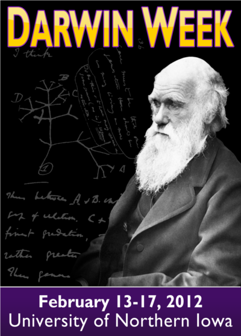
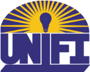

The University of Northern Iowa Freethinkers and Inquirers (UNIFI)
are hosting the 4th annual Darwin Week from February 13th-17th, 2012! Join us for a week-long celebration of
science featuring four different themes: Skepticism, Sexuality, Diversity, and Origins.
Keynote Speakers
- Monday, February 13th - Jamila Bey, NPR Journalist and secular activist in the diverse atheist movement
- Tuesday, February 14th - Dr. Clint Kelly, Professor of Biology studing behavioural and evolutionary ecology at Iowa State University
- Wednesday, February 15th - Dr. Joe Nickell, World renowned skeptical investigator of the paranormal
- Thursday, February 16th - Dr. Lawrence Krauss, Theoretical physicist and professor of physics at Arizona State University

Questions? Send us an email at:
contact@unifreethought.com